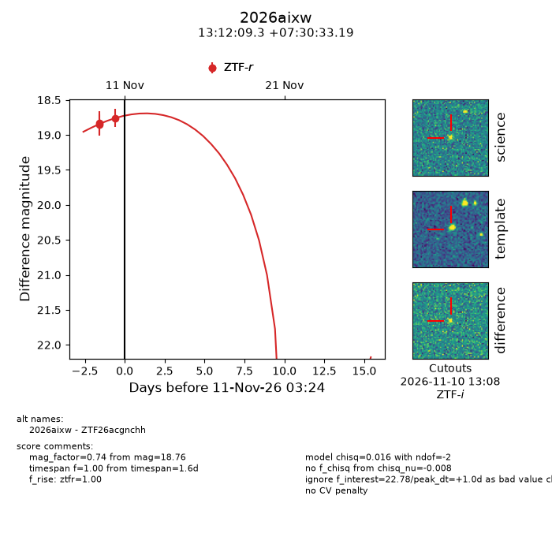
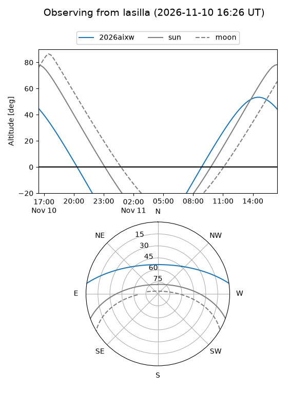
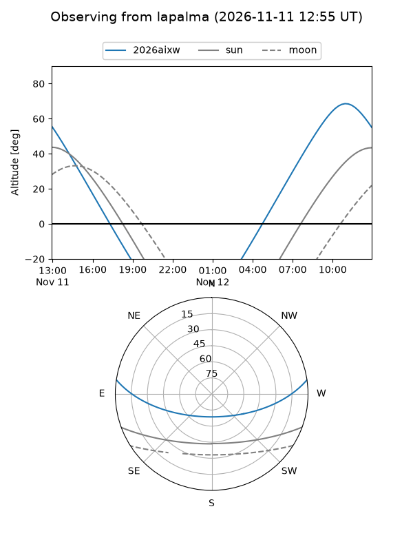
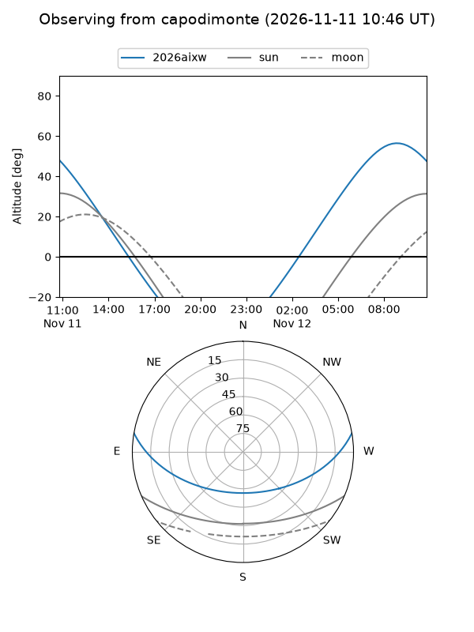
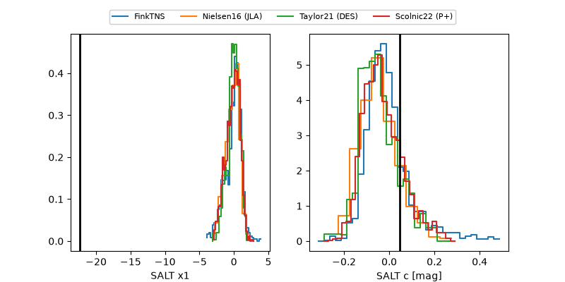

2026aixw
Target 2026aixw at 2026-11-11 15:27
Aliases and brokers:
FINK-ZTF: ztf.fink-portal.org/ZTF26acgnchh
Lasair-ZTF: lasair-ztf.lsst.ac.uk/objects/ZTF26acgnchh
ALeRCE-ZTF: alerce.online/object/ZTF26acgnchh
YSE-PZ: ziggy.ucolick.org/yse/transient_detail/2026aixw
TNS name: wis-tns.org/object/2026aixw
Direct TNS query: direct search
alt names
ZTF26acgnchh (ztf,fink_ztf)
2026aixw (tns,yse)
Coordinates:
equatorial (ra, dec) = 198.0387,+7.50922
equatorial (HMS+DMS) = 13:12:09.30,+07:30:33.19
galactic (l, b) = (317.9359,+69.77519)
Flags:
peak dt: +1.5
Photometry:
last ztfr=18.76
3 ztfr detections
Lightcurve

Visibility



Additional plots
